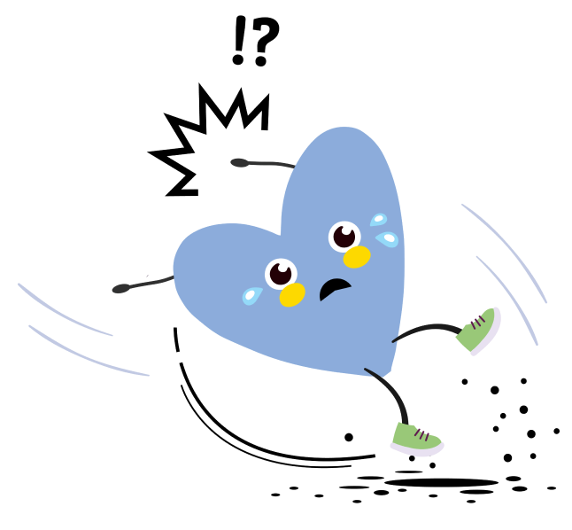

Oletko jo liukastunut tänä vuonna?

Ole varovainen näiden kanssa:
• Varo sisäänkäyntejä ja portaikkoja – ne jäätyvät helposti.
• Käytä varovaisuutta autopaikoilla ja poluilla, joissa liikenne tiivistää jään.
• Vältä kiiltäviä tai märän näköisiä pintoja, kuten laatoituksia.
• Ilmoita jäisistä tai liukkaista kohdista, jotta ne voidaan hiekottaa tai merkitä.
Have you already slipped this year?

Be cautious with these:
• Be cautious around entrances and stairways, as they often freeze.
• Watch your step in parking lots and pathways where traffic compacts ice.
• Avoid shiny or wet-looking surfaces, like tiled areas.
• Report icy or slippery spots so they can be salted or marked.
Puutteet ja läheltä piti -tilanteen ilmoitus
https://palveluportaali.haaga-helia.fi/ssc/app#/order/1924146/
Report of deficiencies and near-miss incidents
https://palveluportaali.haaga-helia.fi/ssc/app#/order/1924146/
